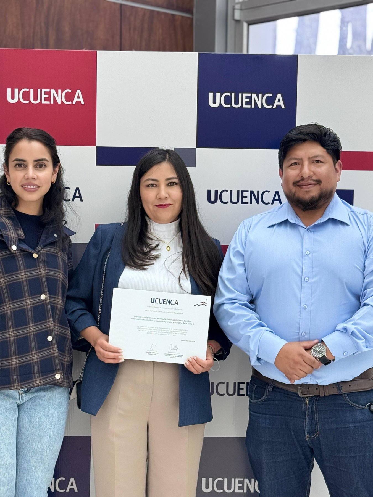

PROYECTO 01VINCULACIÓN CON LA SOCIEDAD
Fabricación digital
para el sector textil
Fabricación Digital como estrategia de fortalecimiento para los actores del área textil de la Economía Popular y Solidaria de la Zona 6
Diseño, formación y prototipado para fortalecer las capacidades de los emprendimientos textiles de la Zona 6.
- PERÍODO PREVISTO
- Marzo 2026 – febrero 2029
- TERRITORIO
- Azuay · Cañar · Morona Santiago
- CONTRAPARTE
- IEPS Zonal 6